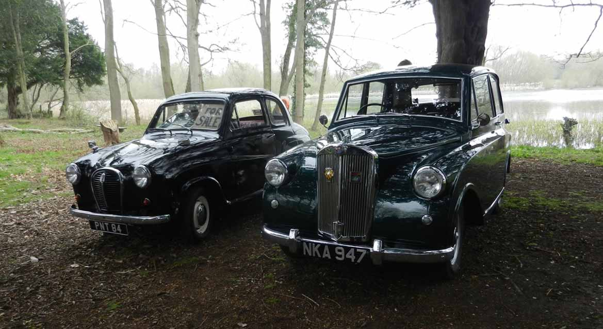

<link href="{{ site.baseurl }}/events/article.css" rel="stylesheet" type="text/css">
<main>
    <article>
        <ol id="breadcrumb">
            <li>
                <a href="{{ site.baseurl }}/">Home</a>
            </li>
            <li>
                <a href="{{ site.baseurl }}/events">Events</a>
            </li>
            <li>
                <a href="{{ site.baseurl }}/events/local">Local</a>
            </li>
            <li>Middleton Hall 2019</li>
        </ol>
        <div id="content">
            <h1>Middleton Hall, Near Tamworth, Warwickshire</h1>
            <h2>7<sup>th</sup> April 2019</h2>
            
            <p>It was with some trepidation that I set out for the 65 mile round trip to the first Middleton Hall meet of the season which is near Tamworth in the Midlands. I had hopefully just solved a problem with missing at high revs by replacing the distributor so this was something of a test run up the A5. The journey took about an hour and I arrived at 10:45 for an 11:00 start. It was packed. Apparently, the spaces in front of the hall were full by 9:30 and the marshals were struggling to find places for the cars now arriving – hence the picturesque spot under the trees not quite in the lake! The 65 miles were completed without incident and so I had a successful and pleasant day out.</p>
            <p>Paul Burgess (1200)</p>
        </div>
    </article>
    <aside>
        <h2>Members’ cars in attendance</h2>
        <ul class="disableListStyles">
            <li>
                <h3>Paul Burgess</h3>
                <div>
                    <div class="numberPlateMarker">NKA 947</div>
                </div>
            </li>
        </ul>
    </aside>
</main>
